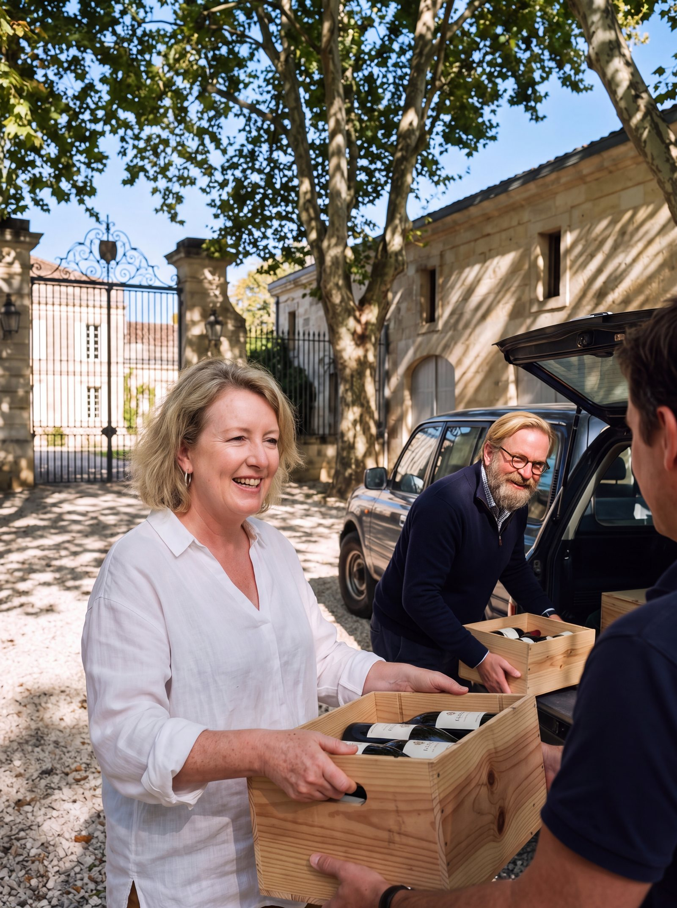

La boutique de la famille Miailhe
Ce que nous avonsgardé pour vous.
À Coufran et à Verdignan, les bouteilles vieillissent au château et ne partent que lorsqu'elles sont prêtes à boire. Soudars se partage dès sa jeunesse, et garde ses doubles magnums pour les grandes tablées. Trois châteaux, une même cave, un seul panier.
Trois châteaux,un seul fournisseur.
Importateurs, distributeurs, négociants, cavistes et restaurateurs : commandez Coufran, Verdignan et Soudars sur devis, par palettes, au départ de la propriété. Une même équipe commerciale pour les trois châteaux, et des millésimes gardés jusqu'à ce qu'ils soient prêts.
- Prêts à boireDes millésimes
- Un seul panierLes trois châteaux partent ensemble
- Livraison offerteDès 12 bouteilles ou un double magnum
- 400 à 600bouteilles par palette
- Sur devisaucun prix public
- Une équipepour les trois châteaux
- Prêts à boiredes millésimes gardés au château
Les doyennes de la cave
Trois bouteillesqui ont attendu.
La plus ancienne bouteille de chaque château encore en vente. Elles ont vieilli chez nous ; vous n'avez plus qu'à les ouvrir.

Une famille, une même cave
De générationen génération.
Louis à Coufran en 1924, Jean à Verdignan en 1976, Éric à Soudars en 1980. Aujourd'hui, Éric et sa fille Lovely veillent sur les trois châteaux, et sur ce qu'ils gardent pour vous.
- Louisle grand-père · Coufran
- Jeanle père · Verdignan
- Éricle fils · Soudars

Le coffret des trois générations
Le grand-père, le père, le fils :un coffret.
Choisissez une bouteille de chaque château : elles prennent place une à une dans le coffret. Puis gravez un nom dessus, pour l'offrir à votre père, à votre grand-père, ou à qui vous voulez.
La cave
Un vin,tous ses millésimes.
Chaque château a son caractère, chaque millésime son âge. Choisissez l'année sur la frise : les bouteilles se vendent par carton de six, et vous pouvez mélanger les trois châteaux.
Le vin de votre année
Une naissance, une rencontre,une année.
Choisissez l'année qui compte pour vous : la cave vous dit ce qu'elle a gardé de ce millésime, dans les trois châteaux.
Où trouver nos vins
Près de chez vous,partout en France.
Coufran et Verdignan vous attendent dans les rayons des grandes enseignes, Soudars chez les cavistes V and B. Cherchez votre ville, ou touchez un département : la carte vous montre les magasins.
Les vins sont proposés dans ces enseignes ; la disponibilité varie selon les magasins. Pas de magasin près de chez vous ? La boutique livre partout en France métropolitaine.
Points de vente : © les contributeurs d'OpenStreetMap (ODbL). Fond de carte : IGN Admin Express (Licence ouverte).

Livraison et retrait
Du châteauà votre table.
Un seul panier
Les trois châteaux partent ensemble : un carton de Coufran et un carton de Soudars font 12 bouteilles, et la livraison est offerte.
La livraison
30 € pour un carton de 6 bouteilles, offerte dès 12 bouteilles ou un double magnum. En France métropolitaine, sous 10 à 12 jours ouvrés ; pour la Corse, contactez-nous.
Le drive du château
Commandez en ligne et choisissez le château, le jour et l'heure : votre commande vous attend à Saint-Seurin-de-Cadourne, et nous la déposons dans votre coffre. Le drive est gratuit, dès un carton.
Vous êtes un professionnel ?
Palettes, vieux millésimes, kit importateur : tout est dans l'espace des professionnels.
L'offre professionnelle
Trois châteaux,trois occasions.
Trois vins de caractère, pour trois moments de table : vous couvrez une carte entière avec une seule famille. Pas de panier ni de prix publics, chaque palette se chiffre.
La marque de la maison
Des millésimesprêts à boire.
Ici, on ne vend pas un vin tant qu'il n'est pas prêt : les bouteilles attendent au château, au frais. Vos clients reçoivent des millésimes plus anciens, à ouvrir dès leur arrivée. Disponibilités selon le stock, sur demande.
Les palettes
Trois façonsde remplir une palette.
Commander
Du devisà la palette.
Pour vos équipes et vos clients
Le kitimportateur.
Votre devis
Votre demandede devis.
Choisissez les vins, le millésime et le format : l'équipe commerciale de la famille vous répond avec un devis complet, transport, droits et documents d'export compris.
Nos partenaires d'abord
Vous achetez déjà nos vins auprès d'un négociant de la Place de Bordeaux, ou votre pays a un importateur exclusif ? Dites-le-nous : nous vous mettons en relation avec lui, pour que rien ne change dans vos habitudes.
Visites et dégustations sur rendez-vous. Chaque année, aux vendanges, une journée au domaine réunit nos importateurs.